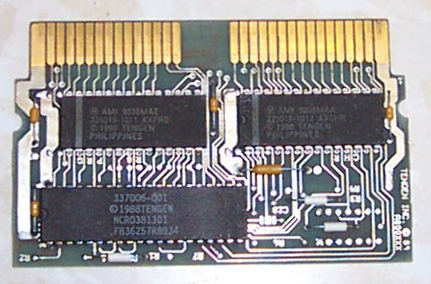

Tengen 80032

Board
Tech Specs:
Max. 128K PRG ROM.
Max. 128K CHR ROM.
RAMBO-1 mapper.
Description:
Looks to be a pretty standard setup. The interesting thing is there is a spot on the board
for a 74LS32 to allow using 28 pin single enable CHR ROMs. When the ROM is 64K or less,
there are jumpers which can be placed on the PCB to bypass it.
This was Tengen's "next gen" mapper hardware, and was only used on a couple games.
It is their answer to the MMC3 apparently. It works similar, but the registers are
a bit hosed up, and the timer IRQ is different. Mirroring seems to be handled by
the mapper now. There is no support for WRAM. The boards are only set up to handle
128K of PRG and 128K of CHR, but there are two NC pins on the mapper which may allow
up to 256K of each. I have tested these two pins. They are indeed extra address lines.
RAMBO-1 pinout (marked 337006)
Chip is packaged in a standard 40 pin DIP
.----\/----.
| |
M2 - |01 40| - +5V
PRG A16 (r) - |02 39| - PRG A17 (r)
PRG A15 (r) - |03 38| - PRG A13 (n)
PRG A13 (r) - |04 37| - PRG A14 (r)
PRG /CE (r) - |05 36| - PRG A14 (n)
PRG D6 (s) - |06 35| - PRG D7 (s)
PRG A0 (s) - |07 34| - PRG D5 (s)
PRG D4 (s) - |08 33| - PRG D0 (s)
PRG D2 (s) - |09 32| - PRG D1 (s)
PRG R/W (n) - |10 31| - PRG D3 (s)
PRG /CE (n) - |11 30| - /IRQ
CHR A10 (r) - |12 29| - CHR A17 (r)
CHR A10 (n) - |13 28| - CHR A11 (r)
CHR A12 (n) - |14 27| - CHR A11 (n)
lockout (n) - |15 26| - CHR A13 (r)
lockout (n) - |16 25| - CHR A12 (r)
lockout (n) - |17 24| - CHR A14 (r)
lockout (n) - |18 23| - CHR A15 (r)
GND - |19 22| - CIRAM A10 (n)
GND - |20 21| - CHR A16 (r)
| |
`----------'
Registers:
8001h, 8000h
Register 8000h is the "control" register, while 8001h is the "data" register.
First, a byte is written into 8000h to select the desired bank register(s).
Then, the desired bank number can be written into 8001h.
8000h:
7 bit 0
---------
CSRx MMMM
C: CHR Address Invert. When set, does an effective XOR of 1000h with the CHR addresses.
S: PRG ROM swapping control.
0 - Swap PRG ROM at 8000h, A000h, and C000h
1 - Swap PRG ROM at A000h, C000h, and 8000h
(first, second, and third banks)
R: CHR ROM bank size control.
1 - changes registers in modes 0 & 1 to only be 1K in size. When set,
modes 8 & 9 control their respective CHR pages as indicated.
0 - registers in modes 0 & 1 are 2K in size. The registers at modes 8 & 9 ARE NOT USED.
M: Mode bits
0000b 0 - Select 2 1K CHR ROM pages at 0000h in PPU space
0001b 1 - Select 2 1K CHR ROM pages at 0800h in PPU space
0010b 2 - Select 1K CHR ROM page at 1000h in PPU space
0011b 3 - Select 1K CHR ROM page at 1400h in PPU space
0100b 4 - Select 1K CHR ROM page at 1800h in PPU space
0101b 5 - Select 1K CHR ROM page at 1C00h in PPU space
0110b 6 - Select first 8K PRG ROM page
0111b 7 - Select second 8K PRG ROM page
1000b 8 - Select 1K CHR ROM page at 0400h in PPU space (only used if bit R is set in 8000h)
1001b 9 - Select 1K CHR ROM page at 0C00h in PPU space (only used if bit R is set in 8000h)
1111b F - Select third 8K PRG ROM page
All other mode selections are unused.
A000h:
7 bit 0
---------
xxxx xxxM
M: Mirroring control
0 - Vertical mirroring
1 - Horizontal mirroring
A001h:
------
Apparently unused.
------
RAMBO-1 IRQ's. The IRQ setup on here is quite interesting. It appears you can select either
a scanline based IRQ *or* an M2-based IRQ. The scanline based IRQ works almost exactly like
the MMC3's, with a few tiny differences. Please see the MMC3 documentation for the down
and dirty.
C000h:
IRQ reload register. After N+1 clocks have occured, the IRQ flag will be set. N is
the value written to C000h. Writing a value of 00h will cause NO interrupts to be generated
at all. (Note: if C001h is written to, then a value of 00h can be used- it will cause an
interrupt to be generated in 2 clocks after C001h is written to. No more interrupts will
be generated unless C001h is written to again).
C001h:
This register deviates from the MMC3 IRQ in one important way- Bit 0 determines the interrupt
source. When clear, the counter clock source is PPU A12 (like on the MMC3). When set, however,
the counter clock source is (M2 / 4). (That's the M2 clock divided by 4) In either case, the
counter decrements on each RISING edge.
Any write here will trigger a reload of the IRQ counter (and select the desired clock source).
One thing of note, after writing, the IRQ counter will expire after a count of N+2 instead of
N+1. In this case, a value of 00h in C000h WILL generate an interrupt after 2 clocks. A
value of 0ffh likewise generates an interrupt after 257d clocks.
E000h:
Disables and resets IRQ flag. Writing anything here will reset and disable the IRQ flag.
Works identically to the MMC3.
E001h:
Enables the IRQ flag. Writing anything here will enable the IRQ flag.
Works identically to the MMC3.
---
Notes: The last 8K of PRG ROM space is hard wired to the last 8K of the PRG ROM. The other
3 8K banks are selectable.
|